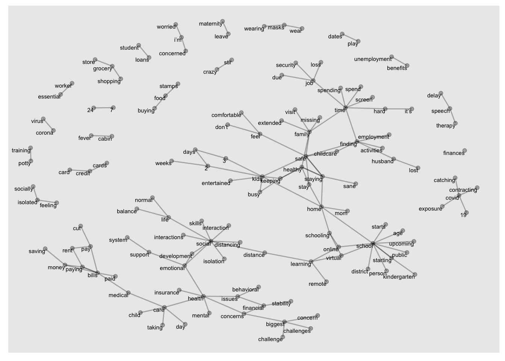

Reports for RAPID R3
Home
Trends
Demographics
Notebook
Caregiver mental health
Child behavior
Change over time
By Week
Week 1 (April 6 - April 13)
Week 2 (April 14 - April 18)
Week 3 (April 20 - April 27)
Week 4 (April 27 - April 30)
Week 5 (May 4 - May 17)
Week 6 (May 11 - May 14)
Week 7 (May 19 - May 23)
Week 8 (May 25 - May 30)
Week 9 (June 1 - June 4)
Week 10 (June 8 - June 11)
Week 11 (June 15 - June 19)
Week 12 (June 22 - June 25)
Week 13 (June 29 - July 2)
Week 14 (July 6 - July 9)
Week 15 (July 13 - July 16)
Week 16 (July 20 - July 23)
Week 17 (July 27 - July 30)
Week 18 (August 3 - August 6)
Week 19 (August 11 - August 13)
Week 20 (August 17 - August 20)
Week 21 (August 25 - August 27)
Week 22 (September 01 - September 03)
Analyses
Specific groups
Children with disabilities
Race/Ethnicity
Single parents
Low-income households
racial_inequality
Sheltering in place
Family Conflict (summer)
Curves
Final Spline Analyses
Policy-relevant variables
Policy-relevant variables
By states
State-level trajectories
Social support
covid Hotspots
Open-ended responses
School reopening
Material hardship
Additional hardship and support
Hardship trends post CARES
Food insecurity and hardship
Material hardship details
Kindergarten
State legislation
Well-baby and vaccines
Childcare
Changes in childcare (May)
Effect of childcare (prop score)
Open-ended childcare
Returning to previous childcare
Childcare descriptives
Childcare special topic
Follow-up on trends
Childcare (spring)
Expectations for future childcare (spring)
Covid cases rising
Family conflict (fall)
Families of children with disability
RISER
Discrimination and concerns for children
Access to resources
By state
Arizona
Califorina
Florida
Georgia
Illinois
Michigan
North Carolina
New York
Ohio
Oregon
Pennsylvania
Texas
Virginia
Washington
Groups
Single caregivers
Latinx caregivers
Black caregivers
Low income caregivers
Variables
Open-ended responses
All resposnes
Challenges
What's helping
Community reopening
Employment/school reopening
Education (older children)
Education (young children)
Information for policy makers
Anything else
Open ended: Challenges
Question:
What are the biggest challenges and concerns for you and your family right now?
Responses
Bi-gram network
